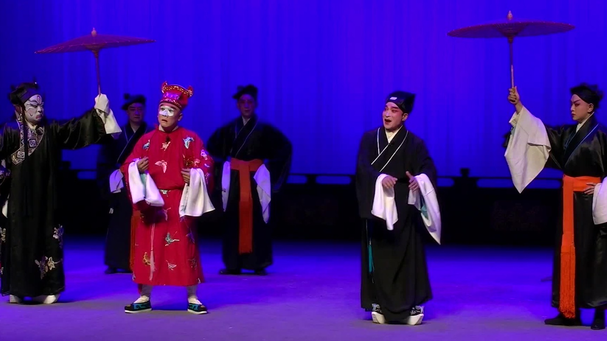
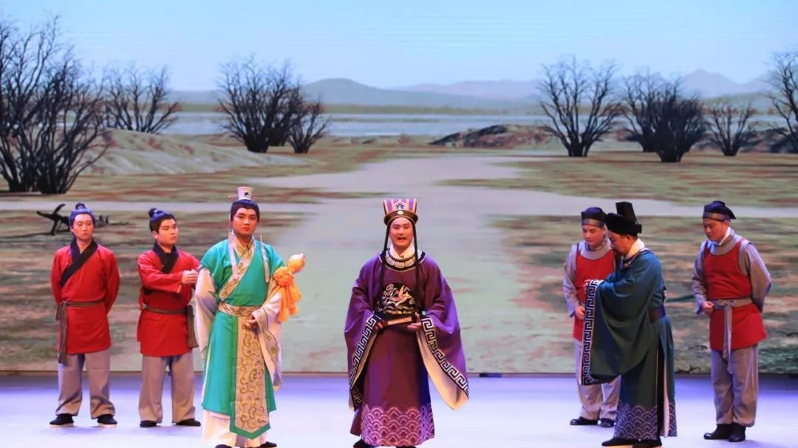

唱腔与音乐
豫剧的唱腔与音乐是其艺术特色的核心载体，构建了兼具丰富性与独特性的音乐体系。豫剧唱腔以梆子腔为基础，兼具抒情性与叙事性，形成了"以情带声、声情并茂"的演唱特点。其核心板式包括慢板、二八板、流水板、散板四类，每类板式又衍生出多种变体。慢板节奏舒缓，旋律优美，多用于表现人物的深沉思考；二八板节奏规整，是豫剧最常用的板式；流水板节奏明快，多用来表现人物的急切心情；散板节奏自由，常用于表现人物的极度悲痛或愤怒情绪。

角色行当
豫剧的角色行当体系完备，以"生、旦、净、丑"为核心框架，行业内素有"四生、四旦、四花脸"的说法。"四生"指老生、大红脸（红生）、二红脸（武生）、小生，各有明确的角色定位与表演规范。老生多扮演中年以上的男性正面角色；大红脸专演关羽这类忠义双全的英雄人物；二红脸以武生角色为主；小生分为文小生与武小生。旦角则包括青衣、花旦、武旦、老旦等，各具特色。

表演技巧
豫剧的表演技巧博大精深，融合了唱、念、做、打等多种艺术手段，形成了极具表现力的表演体系。豫剧表演讲究"字、气、劲、味"四字箴言，要求演员将这四项技术熟练运用，才能达到声情并茂的艺术效果。在手法运用上，豫剧有着丰富的种类，包括兰花手、荷花手、菊花手等抒情类手法，以及举拳、通拳、托天掌等拳掌类动作，不同行当根据角色性格选择适配的手法。